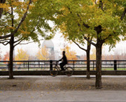

"To be whole. To be complete. Wildness reminds us what it means to be human, what we are connected to rather than what we are separate from."
Terry Tempest Williams
"He who knows what sweets and virtues are in the ground, the waters, the plants, the heavens, and how to come at these enchantments, is the rich and royal man."
Ralph Waldo Emerson
About Meridien GreenStart
GreenStart - green awareness in action!
GreenStart is a community-based organization dedicated to increasing awareness of green causes and activities. We believe we live best, when we live in harmony with the environment and the natural ebb and flow of the world around us.
In most cases, green living is cheaper, less wasteful, healthier and less damaging to the earth. Green living keeps us closer to our friends and family and the multitude forms of life that surround us on a daily basis.
GreenStart offers events, classes, products and resources to help you live a green lifestyle. But you don't have to give up everything you do now, every little bit helps. Start slowly and change the things that make sense to you. Eventually, you'll see how much better you feel when you live green.
Check out all the fun products and opportunities offered on the website. Check the site frequently for news, events and fun products. Become a member today and you will receive regular updates by email.
Being green is easy, with GreenStart!
When shopping for groceries, buy fruits and vegetables at farmers markets to support local agriculture.

We practice what we preach, here's Lin riding to work through Lakefront Park.